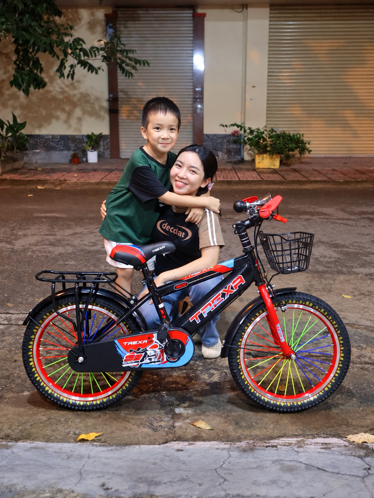

Xe đạp trẻ em
Chiếc xe đầu đời, an tâm từng vòng bánh.

ABRAHAM BIKE · HƠN 20 NĂM TIN CẬY
Hơn 20 năm làm xe đạp cho gia đình Việt.
CHỌN XE
Từ bé nhỏ đến người lớn, từ phố phường đến đường dài, Abraham có dòng xe dành cho bạn.
Chiếc xe đầu đời, an tâm từng vòng bánh.

Nhẹ nhàng, duyên dáng cho mỗi ngày.
Vững tay lái, chinh phục mọi địa hình.
Đường dài thoải mái, đi xa hơn mỗi tuần.
Gọn gàng, tiện lợi cho nhịp sống thành phố.
GIÁ TRỊ ABRAHAM
Không chỉ bán một chiếc xe. Abraham muốn trở thành người bạn đáng tin cậy của bạn và của cả gia đình.
Thông tin sản phẩm rõ ràng, cam kết minh bạch trong mọi hoạt động.
Sản phẩm đạt chuẩn An toàn – Hợp chuẩn – Hợp quy (CR), sẵn sàng đồng hành lâu dài.
Đồng hành từng bước, từ lúc chọn xe đến khi cần hỗ trợ.
CÂU CHUYỆN THƯƠNG HIỆU
Abraham là tên một nhân vật vĩ đại trong lịch sử, được biết đến là “Tổ phụ của Đức tin”, biểu tượng của lòng trung tín, sự tin cậy và tận tâm.
Chúng tôi chọn cái tên này như một lời hứa: mỗi chiếc xe Abraham là một sự tin cậy trao đến gia đình bạn.
Đọc câu chuyện của chúng tôi →CỘNG ĐỒNG
Abraham hướng các hoạt động trách nhiệm cộng đồng đến trẻ em vùng sâu, vùng xa — để mỗi chiếc xe không chỉ rút ngắn con đường đến trường, mà còn mở rộng hành trình tới tương lai.

“Chúng tôi trân trọng gửi lời cảm ơn sâu sắc đến hơn 3.000 đại lý và hàng triệu khách hàng đã tin tưởng, lựa chọn và đồng hành cùng Abraham. Chúng tôi hướng tới vai trò người bạn đồng hành đáng tin cậy trên hành trình kiến tạo cuộc sống khỏe mạnh, năng động và hạnh phúc.”
TÌM ĐẠI LÝ
Xem, thử và chọn xe Abraham ngay tại cửa hàng gần nhất.
Dữ liệu bên phải chỉ là minh họa, chưa phải danh sách đại lý chính thức.Chọn tỉnh / thành phố để xem đại lý gần bạn.
CẨM NANG